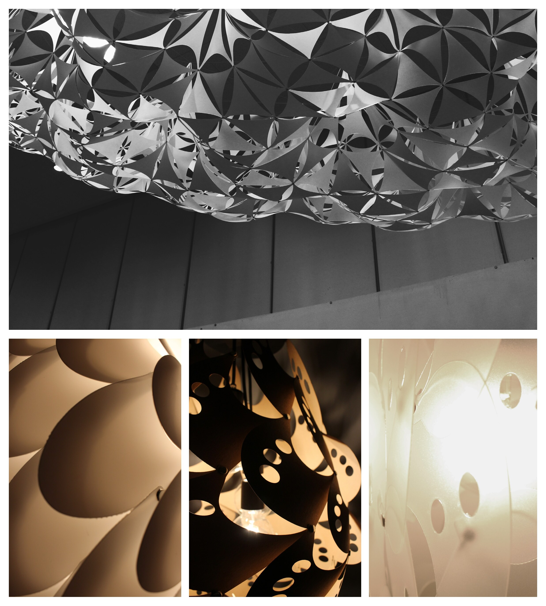
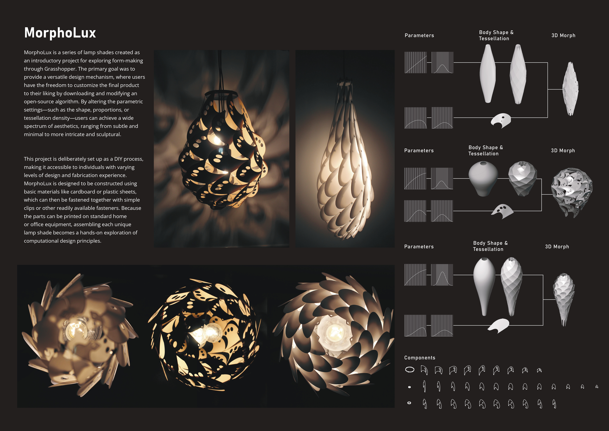

Two projects from an undergraduate digital design studio, both generated in Grasshopper. MorphoLux is a series of lamp shades made as an introductory project in form-making. The shape, proportions, and tessellation density are parameters, so one definition produces different shades. The parts can be made from cardboard or plastic sheets and fastened with simple clips.
Manta was selected in an in-class competition and installed in the SNU DAAE hall. The design starts from one large triangle subdivided into smaller triangles. Anchor points were fixed and simulated downward forces were applied to find the hanging form. The surface is made of hundreds of units sized according to their position. Python scripts organized the fabrication data, and the assembled modules hang from cables at chosen vertices.

